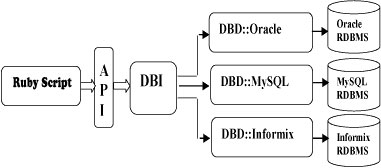

Ruby データベースアクセス - DBI チュートリアル
この章では、Ruby を使用してデータベースにアクセスする方法を説明します。Ruby DBIDBI モジュールは、Ruby スクリプトに Perl DBI モジュールと同様の、データベースに依存しないインターフェースを提供します。
DBI は Database independent interface の略であり、Ruby におけるデータベース独立インターフェースを意味します。DBI は Ruby コードと基盤となるデータベースの間に抽象レイヤーを提供し、データベースの切り替えを簡単に実現できます。DBI は一連のメソッド、変数、仕様を定義し、データベースに依存しない一貫したデータベースインターフェースを提供します。
DBI は以下と対話できます：
- ADO (ActiveX Data Objects)
- DB2
- Frontbase
- mSQL
- MySQL
- ODBC
- Oracle
- OCI8 (Oracle)
- PostgreSQL
- Proxy/Server
- SQLite
- SQLRelay
DBI アプリケーションアーキテクチャ
DBI は、バックエンドで利用可能なあらゆるデータベースから独立しています。Oracle、MySQL、Informix のいずれを使用している場合でも、DBI を使用できます。次のアーキテクチャ図はこの点を明確に示しています。

Ruby DBI の一般的なアーキテクチャは2つのレイヤーを使用します：
- データベースインターフェース（DBI）レイヤー。このレイヤーはデータベースから独立しており、データベースサーバーの種類に関係なく使用できる一連の共通アクセスメソッドを提供します。
- データベースドライバ（DBD）レイヤー。このレイヤーはデータベースに依存しており、異なるドライバが異なるデータベースエンジンへのアクセスを提供します。MySQL、PostgreSQL、InterBase、Oracle などではそれぞれ異なるドライバを使用します。各ドライバは DBI レイヤーからのリクエストを解釈し、それらのリクエストを特定の種類のデータベースサーバーに適したリクエストにマッピングする役割を担います。
インストール
MySQL データベースにアクセスする Ruby スクリプトを作成するには、まず Ruby MySQL モジュールをインストールする必要があります。
Mysql 開発パッケージのインストール
Mac OS システムでは ~/.bash_profile または ~/.profile ファイルを変更し、次のコードを追加する必要があります：
またはシンボリックリンクを使用します：
RubyGems を使用した DBI のインストール（推奨）
RubyGems は2003年11月頃に作成され、Ruby 1.9 から Ruby 標準ライブラリの一部となりました。詳細は以下を参照してください：Ruby RubyGems
gem を使用して dbi と dbd-mysql をインストールします：
ソースコードからのインストール（Ruby バージョン 1.9 未満の場合はこの方法を使用）
このモジュールは DBD であり、以下からhttp://tmtm.org/downloads/mysql/ruby/ダウンロードできます。
最新のパッケージをダウンロードして解凍し、ディレクトリに入って、以下のコマンドを実行してインストールします：
次にコンパイルします：
Ruby/DBI の取得とインストール
以下のリンクから Ruby DBI モジュールをダウンロードしてインストールできます：
https://github.com/erikh/ruby-dbi
インストールを開始する前に、root 権限を持っていることを確認してください。それでは、以下の手順に従ってインストールします：
ステップ 1
または zip パッケージを直接ダウンロードして解凍します。
ステップ 2
ディレクトリに移動し、ruby-dbi-masterそのディレクトリ内でsetup.rbスクリプトを使用して構成します。最も一般的な構成コマンドは、config パラメータの後に何も指定しない方法です。このコマンドはデフォルトですべてのドライバをインストールするように構成されます。
より具体的には、--with オプションを使用して、使用する特定の部分を指定できます。たとえば、主要な DBI モジュールと MySQL DBD レイヤードライバのみを構成する場合は、次のコマンドを入力します：
ステップ 3
最後のステップはドライバをビルドし、以下のコマンドを使用してインストールすることです：
データベース接続
MySQL データベースを使用していると仮定します。データベースに接続する前に、以下を確認してください：
- データベース TESTDB を作成していること。
- TESTDB にテーブル EMPLOYEE を作成していること。
- そのテーブルには FIRST_NAME、LAST_NAME、AGE、SEX、INCOME というフィールドがあります。
- TESTDB にアクセスするためのユーザー ID "testuser" とパスワード "test123" を設定していること。
- お使いのマシンに Ruby モジュール DBI が正しくインストールされていること。
- MySQL チュートリアルを読み、MySQL の基本操作を理解していること。
以下は MySQL データベース "TESTDB" に接続する例です：
例
このスクリプトを実行すると、Linux マシンでは次の結果が生成されます。
Server version: 5.0.45
接続時にデータソースを指定すると、データベースハンドル（Database Handle）が返され、dbhに保存されて以降の処理で使用されます。そうでない場合、dbhは nil 値に設定され、e.err 和 e::errstrそれぞれエラーコードとエラー文字列が返されます。
最後に、プログラムを終了する前に、データベース接続を閉じてリソースを解放してください。
INSERT 操作
データベーステーブルにレコードを作成する場合、INSERT 操作を使用する必要があります。
データベース接続が確立されると、doメソッドまたはprepare 和 executeメソッドを使用して、テーブルを作成したり、データベーステーブルに挿入するレコードを作成したりできます。
do 文の使用
行を返さないステートメントは、doデータベース処理メソッドを呼び出すことで実行できます。このメソッドはステートメント文字列を1つの引数として受け取り、そのステートメントによって影響を受けた行数を返します。
同様に、SQLINSERTステートメントを実行して、EMPLOYEE テーブルにレコードを作成して挿入できます。
例
使用prepare 和 execute
DBI のprepare 和 executeメソッドを使用して、Ruby コード内の SQL ステートメントを実行できます。
レコードを作成する手順は次のとおりです：
- INSERT ステートメントを含む SQL ステートメントを準備します。これは、prepareメソッドを使用して行われます。
- SQL クエリを実行し、データベースからすべての結果を取得します。これは、executeメソッドを使用して行われます。
- ステートメントハンドルを解放します。これは、finishAPI を使用して行われます。
- すべてがうまくいけば、commitその操作をコミットし、そうでなければrollbackロールバックしてトランザクションを完了できます。
以下はこれら2つのメソッドを使用する構文です：
例
これら2つのメソッドは、bindSQL ステートメントに値を渡すために使用できます。入力される値が事前にわからない場合があります。その場合は、バインド値が使用されます。疑問符（?）が実際の値の代わりに使用され、実際の値は execute() API を通じて渡されます。
次の例では、EMPLOYEE テーブルに2つのレコードを作成します：
例
複数の INSERT を同時に使用する場合、1つのステートメントを準備してからループ内でそれを複数回実行する方が、ループ内で毎回 do を呼び出すよりもはるかに効率的です。
READ 操作
あらゆるデータベースに対する READ 操作とは、データベースから有用な情報を取得することです。
データベース接続が確立されると、データベースにクエリを実行する準備ができます。次を使用できます：doメソッドまたはprepare 和 executeメソッドを使用して、データベーステーブルから値を取得できます。
レコードを取得する手順は次のとおりです：
- 必要な条件に基づいて SQL クエリを準備します。これは、prepareメソッドを使用して完了します。
- SQL クエリを実行し、データベースからすべての結果を取得します。これは、executeメソッドを使用して完了します。
- 結果を一つずつ取得し、出力します。これは、fetchメソッドを使用して完了します。
- ステートメントハンドルを解放します。これは、finishメソッドを使用して完了します。
次の例では、EMPLOYEE テーブルから給与（salary）が 1000 を超えるすべてのレコードをクエリします。
例
これにより、次の結果が生成されます：
First Name: Mac, Last Name : Mohan Age: 20, Sex : M Salary :2000 First Name: John, Last Name : Poul Age: 25, Sex : M Salary :2300
データベースからレコードを取得する方法は他にもたくさんあります。興味があれば、以下を参照してください。Ruby DBI 読み取り操作。
Update 操作
任意のデータベースに対する UPDATE 操作は、データベース内の1つ以上の既存レコードを更新することを指します。次の例では、SEX が 'M' のすべてのレコードを更新します。ここでは、すべての男性の AGE を1歳増やします。これは3つのステップに分けられます：
- 必要な条件に基づいて SQL クエリを準備します。これは、prepareメソッドを使用して完了します。
- SQL クエリを実行し、データベースからすべての結果を取得します。これは、executeメソッドを使用して完了します。
- ステートメントハンドルを解放します。これは、finishメソッドを使用して完了します。
- すべてが順調に進んだ場合は、commitその操作を実行し、そうでない場合は、rollbackトランザクションを完了します。
例
DELETE 操作
データベースからレコードを削除する場合は、DELETE 操作を使用する必要があります。次の例では、EMPLOYEE から AGE が 20 を超えるすべてのレコードを削除します。この操作の手順は次のとおりです。
- 必要な条件に基づいて SQL クエリを準備します。これは、prepareメソッドを使用して完了します。
- SQL クエリを実行し、データベースから必要なレコードを削除します。これは、executeメソッドを使用して完了します。
- ステートメントハンドルを解放します。これは、finishメソッドを使用して完了します。
- すべてが順調に進んだ場合は、commitその操作を実行し、そうでない場合は、rollbackトランザクションを完了します。
例
トランザクションの実行
トランザクションは、取引の一貫性を保証するメカニズムです。トランザクションには次の4つの属性が必要です。
- 原子性（Atomicity）：トランザクションの原子性とは、トランザクションに含まれるプログラムがデータベースの論理作業単位として、データ変更操作をすべて実行するか、まったく実行しないかのどちらかであることを指します。
- 一貫性（Consistency）：トランザクションの一貫性とは、トランザクションの実行前と実行後の両方でデータベースが一貫性のある状態でなければならないことを指します。データベースの状態がすべての整合性制約を満たす場合、そのデータベースは一貫性があると言います。
- 分離性（Isolation）：トランザクションの分離性とは、並行して実行されるトランザクションが互いに分離されていることを指します。つまり、トランザクション内部の操作と操作中のデータはロックされ、他の変更を試みるトランザクションから見えないようにしなければなりません。
- 永続性（Durability）：トランザクションの永続性とは、システムまたはメディアに障害が発生した場合でも、コミット済みトランザクションの更新が失われないことを保証することを意味します。つまり、トランザクションがコミットされると、データベース内のデータへの変更は永久的であり、あらゆるデータベースシステム障害に耐える必要があります。永続性は、データベースのバックアップとリカバリによって保証されます。
DBI はトランザクションを実行する2つの方法を提供します。1つはcommit 或 rollbackトランザクションをコミットまたはロールバックするためのメソッドです。もう1つはtransactionトランザクションの実装に使用できるメソッドです。次に、トランザクションを実装するためのこの2つの簡単な方法を紹介します。
方法 I
最初の方法では、DBI のcommit 和 rollbackメソッドを使用して、トランザクションを明示的にコミットまたはキャンセルします。
例
方法 II
2番目の方法では、transactionメソッドを使用します。この方法は、トランザクションを構成するステートメントを含むコードブロックを必要とするため、比較的簡単です。transactionメソッドはブロックを実行し、ブロックが正常に実行されたかどうかに応じて、自動的にcommit 或 rollback：
例
COMMIT 操作
COMMIT は、データベースが変更を完了したことを示す操作です。この操作の後、すべての変更は元に戻せません。
以下は、commitメソッドを呼び出す簡単な例です。
ROLLBACK 操作
1つまたは複数の変更に満足できない場合、それらの変更を完全に元に戻したい場合は、rollbackメソッドを使用します。
以下は、rollbackメソッドを呼び出す簡単な例です。
データベースの切断
データベース接続を切断するには、disconnect API を使用してください。
ユーザーが disconnect メソッドを使用してデータベース接続を閉じた場合、DBI は未完了のトランザクションをすべてロールバックします。ただし、DBI の実装の詳細に依存する必要はなく、アプリケーションは commit または rollback を明示的に呼び出すだけで十分です。
エラー処理
さまざまなエラー原因があります。たとえば、SQL ステートメントの実行中の構文エラー、接続失敗、または既にキャンセルまたは完了したステートメントハンドルに対して fetch メソッドを呼び出すことなどです。
特定の DBI メソッドが失敗すると、DBI は例外をスローします。DBI メソッドは任意のタイプの例外をスローできますが、最も重要な2つの例外クラスはDBI::InterfaceError 和 DBI::DatabaseError。
これらのクラスの Exception オブジェクトにはerr、errstr 和 state3つの属性があり、それぞれエラー番号、説明的なエラー文字列、標準エラーコードを表します。属性の詳細は次のとおりです。
- err：発生したエラーの整数表現を返します。DBD がサポートしていない場合は、nilを返します。たとえば、Oracle DBD はORA-XXXXエラーメッセージの数値部分を返します。
- errstr：発生したエラーの文字列表現を返します。
- state：発生したエラーの SQLSTATE コードを返します。SQLSTATE は5文字の長さの文字列です。ほとんどの DBD はこれをサポートしていないため、nil を返します。
上記の例で、次のコードをすでに確認しました。
スクリプト実行時のスクリプト実行内容に関するデバッグ情報を取得するには、トレースを有効にできます。そのためには、最初に dbi/trace モジュールをダウンロードし、トレースモードと出力先を制御するtraceメソッドを呼び出す必要があります。
mode の値は 0（オフ）、1、2、または 3 にできます。destination の値は IO オブジェクトである必要があります。デフォルト値はそれぞれ 2 と STDERR です。
メソッドのコードブロック
ハンドルを作成するメソッドがいくつかあります。これらのメソッドはコードブロックとともに呼び出されます。メソッドでコードブロックを使用する利点は、コードブロックにハンドルを引数として提供し、ブロックが終了するとハンドルを自動的にクリアすることです。以下に、この概念を理解するのに役立つ例をいくつか示します。
- DBI.connect ：このメソッドはデータベースハンドルを生成します。ブロックの最後でdisconnectを呼び出してデータベースを切断することをお勧めします。
- dbh.prepare ：このメソッドはステートメントハンドルを生成します。ブロックの最後でfinishを呼び出すことをお勧めします。ブロック内では、executeメソッドを呼び出してステートメントを実行する必要があります。
- dbh.execute ：このメソッドは dbh.prepare と似ていますが、dbh.execute ではブロック内で execute メソッドを呼び出す必要はありません。ステートメントハンドルが自動的に実行されます。
例 1
DBI.connectコードブロックを指定でき、データベースハンドルが渡され、ブロックの最後でハンドルが自動的に切断されます。
dbh = DBI.connect("DBI:Mysql:TESTDB:localhost",
"testuser", "test123") do |dbh|
例 2
dbh.prepareコードブロックを指定でき、ステートメントハンドルが渡され、ブロックの最後で finish が自動的に呼び出されます。
例 3
dbh.executeコードブロックを指定でき、ステートメントハンドルが渡され、ブロックの最後で finish が自動的に呼び出されます。
DBI transactionメソッドもコードブロックを指定できます。これについては、前述の章で説明しました。
特定ドライバの関数と属性
DBI では、データベースドライバーが追加のデータベース固有関数を提供できます。これらの関数は、ユーザーが任意の Handle オブジェクトのfuncメソッドを通じて呼び出すことができます。
を使用して[]= or []メソッドで、特定のドライバーの属性を設定または取得できます。
DBD::Mysql は、次のドライバー固有の関数を実装しています。
| 番号 | 関数と説明 |
|---|---|
| 1 | dbh.func(:createdb, db_name) 新しいデータベースを作成します。 |
| 2 | dbh.func(:dropdb, db_name) データベースを削除します。 |
| 3 | dbh.func(:reload) リロード操作を実行します。 |
| 4 | dbh.func(:shutdown) サーバーをシャットダウンします。 |
| 5 | dbh.func(:insert_id) => Fixnum この接続の最新の AUTO_INCREMENT 値を返します。 |
| 6 | dbh.func(:client_info) => String バージョンに基づいて MySQL クライアント情報を返します。 |
| 7 | dbh.func(:client_version) => Fixnum バージョンに基づいてクライアント情報を返します。これは :client_info と似ていますが、文字列ではなく fixnum を返します。 |
| 8 | dbh.func(:host_info) => String ホスト情報を返します。 |
| 9 | dbh.func(:proto_info) => Fixnum 通信に使用するプロトコルを返します。 |
| 10 | dbh.func(:server_info) => String バージョンに基づいて MySQL サーバー側の情報を返します。 |
| 11 | dbh.func(:stat) => Stringb> データベースの現在の状態を返します。 |
| 12 | dbh.func(:thread_id) => Fixnum 現在のスレッドの ID を返します。 |
#!/usr/bin/ruby
require "dbi"
begin
#MySQL サーバーに接続する
dbh = DBI.connect("DBI:Mysql:TESTDB:localhost",
"testuser", "test123")
puts dbh.func(:client_info)
puts dbh.func(:client_version)
puts dbh.func(:host_info)
puts dbh.func(:proto_info)
puts dbh.func(:server_info)
puts dbh.func(:thread_id)
puts dbh.func(:stat)
rescue DBI::DatabaseError => e
puts "An error occurred"
puts "Error code: #{e.err}"
puts "Error message: #{e.errstr}"
ensure
dbh.disconnect if dbh
end
これにより、次の結果が生成されます：
5.0.45 50045 Localhost via UNIX socket 10 5.0.45 150621 Uptime: 384981 Threads: 1 Questions: 1101078 Slow queries: 4 \ Opens: 324 Flush tables: 1 Open tables: 64 \ Queries per second avg: 2.860その他の拡張機能
クリックしてノートを共有